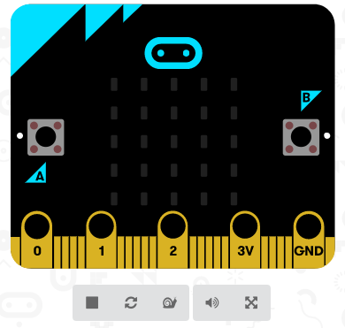
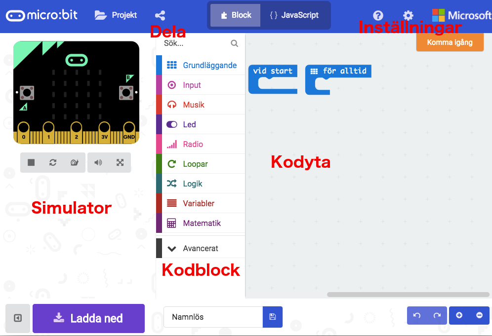
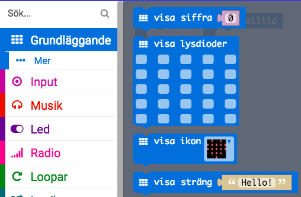
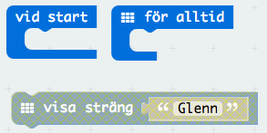
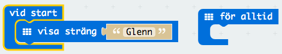
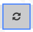
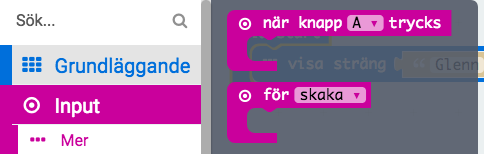

micro:bit uppvärmning
Denna uppgift är för dig som aldrig har kodat med micro:bit förut och vill ha en snabbstart innan du börjar koda ett riktig program.

1 – Kom igång med micro:bits
Här kommer några tips för att komma igång med din micro:bit.
Hitta till micro:bit editorn
För att koda program till din micro:bit gå till denna adress
https://makecode.microbit.org
micro:bit editorn

Editorn är indelat i tre stora delar
Till höger finns kodytan där du bygger upp din kod
I mitten hittar du alla kodblock som behöver i olika kategorier
Till vänster hittar du en simulator där du kan testa din kod innan du kopierar över den till din micro:bit
Det finns också två andra knappar som kan vara bra att känna till
Föra över program till micro:biten
När du har skapat ett program i editorn behöver du flytta över den till micro:biten. Det gör du genom att
Namnge projektet

Klicka på "Ladda ned"-knappen. Vilket gör att en liten fil med ändelsen hex laddas ner till din dator.

Koppla in micro:biten till datorn med hjälp av en USB kabel
Flytta hex-filen till micro:biten
Om du har svårt att veta hur du ska flytta över filen till micro:biten, fråga en vuxen!
2 - Visa ditt namn
Det första du ska få koda är att ditt namn ska dyka upp på micro:biten när du startar den.
Klicka på kategorin Grundläggande

Dra in ett block visa sträng... till kodytan och byt ut Hello! mot ditt eget namn.

Det finns redan två kodblock på kodytan som inte går att ta bort. Ett block som körs när programmet startar och ett block som alltid kör en loop.
Dra in blocket visa sträng... innanför blocket vid start

Testa! Du kan testa ditt spel med hjälp av simulator till vänster i fönstret. Klicka på knappen  för att startar om simuleringen om texten redan försvunnit.
Ladda ner spelet! Döp spelet till namn och klicka på "Ladda ner" för sedan över filen med programmet till micro:biten med en USB-kabel. Syns ditt namn på micro:biten när den startar?
3 – Använd knapparna
På micro:biten finns det två knappar A och B. Nu ska du få koda vad som ska hända när du trycker på dem.
Klicka på kategorin Input

Dra in ett block när knapp A trycks till kodytan
Vad ska hända när du trycker på knapp A? Här visar vi hur du kan skapa en enkel animation – men du får koda vad du vill! Du kan till exempel göra så att micro:biten visar temperaturen.
Dra in ett block upprepa 4 gånger från kategorin Loopar och lägg det innanför blocket som körs när du trycker på knapp A
Lägg in dessa två block innanför loopen:
Tips! du kan också rita dina egna bilder med blocket visa lysdioder
Testa! Du kan testa ditt spel med hjälp av simulator till vänster i fönstret. Klicka på den lilla cirkeln ovanför A.
Ladda ner spelet! Döp spelet till knappA och klicka på "Ladda ner" för sedan över filen med programmet till micro:biten med en USB-kabel. Vad händer om du trycker på knapp A?
Färdig!
Grattis, nu är du redo att koda ett riktigt program med din micro:bit.